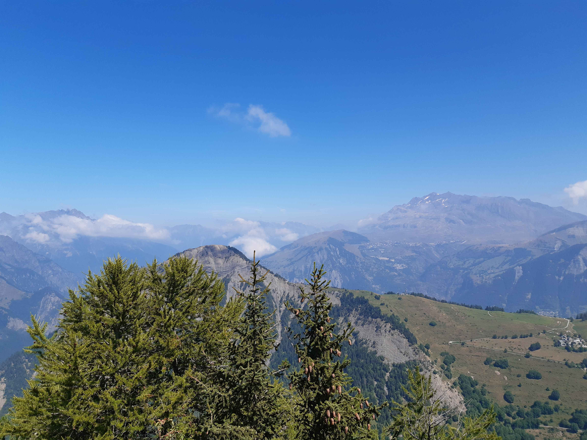
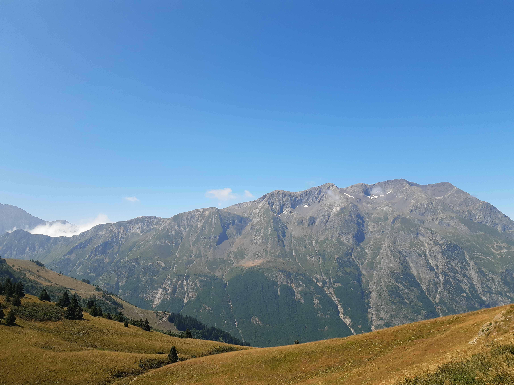
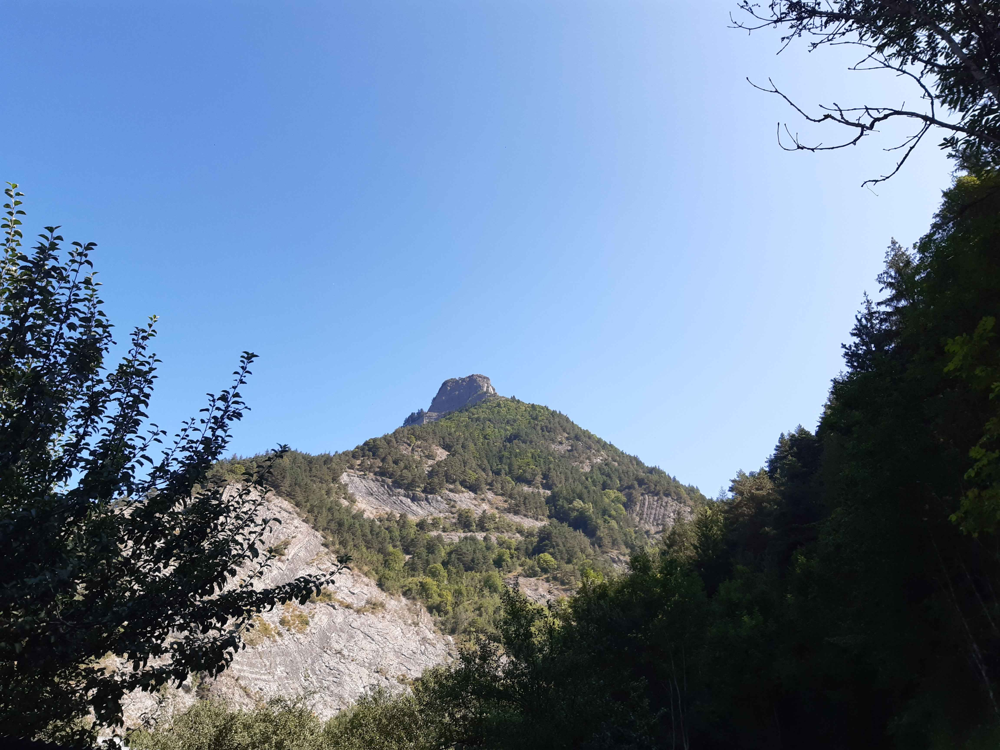
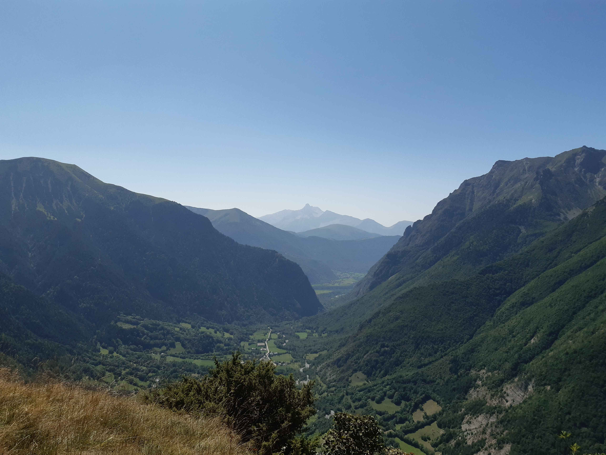
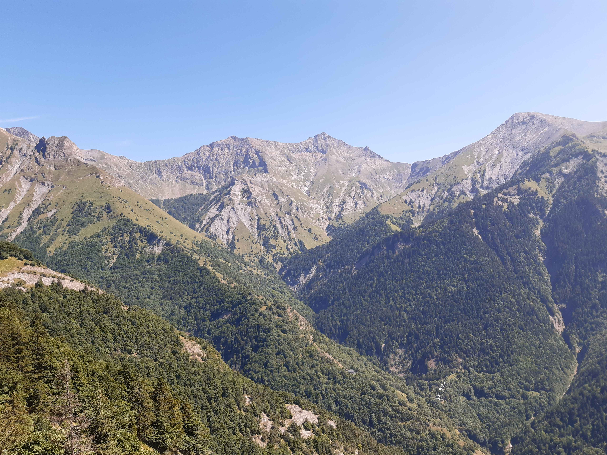
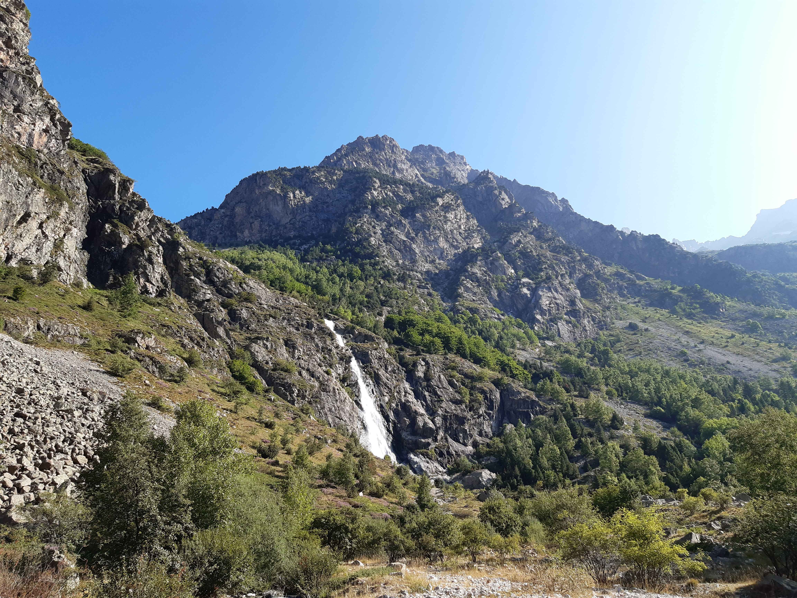

Description de l'itinéraire : parking au-dessus de la station du col d'Ornon - col de Corbière - la Tête de Louis XVI
Distance : 7 km
Dénivelé positif : 600 m
Point le plus bas : 1453 m
Point le plus haut : 1968 m
Cotation en l'absence de neige : T1
Intérêt : 3/5
Date : 21/8/24
Photos :
Au premier plan, le village de Villard-Reymond ; de gauche à droite en arrière-plan : les aiguilles d'Arves, le glacier de la Girose et la Meije Au premier plan, le Prégentil ; en arrière-plan : le massif des Grandes RoussesDe gauche à droite : le Grand Renaud, le Petit Renaud et la Tête des Filons Le massif du Taillefer
Le Touret
Type : boucle
Description de l'itinéraire : le Périer - le Touret - les Daurens - pont du Gas - les Rambeaux
Distance : 10 km
Dénivelé positif : 800 m
Point le plus bas : 896 m
Point le plus haut : 1574 m
Cotation en l'absence de neige : T2
Intérêt : 2/5
Date : 22/8/24
Photos :
 Le Touret vu depuis le Périer La vallée de la Malsanne et la Grande Tête de l'Obiou Vue du sommet avec notamment le signal du Lauvitel
Refuge de Font Turbat
Type : aller simple
Description de l'itinéraire : le Désert en Valjouffrey - refuge de Font Turbat
Distance : 9 km
Dénivelé positif : 900 m
Point le plus bas : 1248 m
Point le plus haut : 2169 m
Cotation en l'absence de neige : T3
Intérêt : 3/5
Date : 23/8/24 (en aller-retour)
Photos :
 La cascade de la PisseDes moutons devant l'OlanL'Olan vu depuis le refuge de Font Turbat
Lac du Lauvitel
Type : aller-retour
Description de l'itinéraire : les Ougiers - la Danchère - les Selles - lac du Lauvitel.